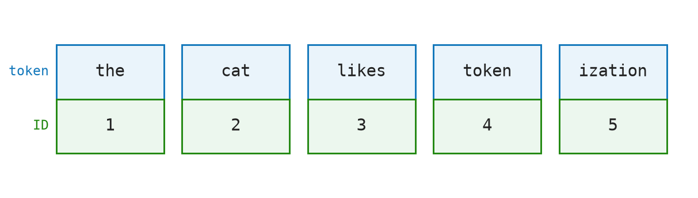

3 Tokens — Text to Numbers
A language model does not read text. It reads integers. The first job of any GPT pipeline is to convert a string of characters into a sequence of integers. That conversion is called tokenization, and the integers it produces are called token IDs.
This chapter explains what tokens are, how they are produced, and what they look like as data structures. We implement a tiny byte-pair encoding tokenizer in Python.
3.1 The Idea
Consider the sentence:
the cat likes tokenizationA human reads four words. A GPT model reads something like:

Where each two-cell block is a token and the number is its ID in a vocabulary table. The model never sees the full word "tokenization" as one unit here — it sees the IDs for "token" and "ization".
Why not just use characters? You could map each letter to an integer: a→1, b→2, …. The problem is that the model would need to learn that c, a, t together mean something different from c, a, r. It would have to rediscover every word from scratch. This makes learning extremely sample-inefficient.
Why not use whole words? The opposite extreme. Map every word to an integer. This works for common words, but English has hundreds of thousands of words, and new ones appear constantly. The vocabulary would be enormous, and rare words would have almost no training data.
Subword tokenization finds the middle ground. Common whole words become single tokens. Rare words get split into recognizable pieces. The word "tokenization" might become ["token", "ization"]. The word "running" might become ["run", "ning"].
3.2 Byte Pair Encoding (BPE)
The most common tokenization algorithm used in GPT models is Byte Pair Encoding. The algorithm has two phases:
Training phase (happens once, offline):
- Start with a vocabulary of individual characters (or bytes).
- Count every adjacent pair of tokens in the training corpus.
- Merge the most frequent pair into a single new token.
- Repeat until the vocabulary reaches the target size (e.g., 50,000).
Encoding phase (happens at inference time):
- Start with the input string split into individual characters.
- Greedily merge adjacent pairs according to the trained merge rules, highest-priority first.
- Return the final token IDs.
3.2.1 The Math
Let \(V_0 = \{c_1, c_2, \ldots\}\) be the initial character vocabulary. After each merge step \(k\):
\[ V_{k+1} = V_k \cup \{(a, b) \mid \text{freq}(a, b) \text{ is max over all adjacent pairs}\} \]
The merge order defines a priority list \(M = [(a_1,b_1), (a_2,b_2), \ldots]\).
3.3 The Matrix: A Tiny Vocabulary Table
This section traces through a micro-example. Suppose our entire training corpus is:
low lower newest3.3.1 Step 0 — Character Vocabulary
| Token | l |
o |
w |
e |
r |
n |
s |
t |
_ |
|---|---|---|---|---|---|---|---|---|---|
| ID | 0 | 1 | 2 | 3 | 4 | 5 | 6 | 7 | 8 |
_ marks the end of a word.
Initial tokenized corpus: [l,o,w,_] [l,o,w,e,r,_] [n,e,w,e,s,t,_]
3.3.2 Step 1 — Choose a Frequent Pair to Merge
Count adjacent token pairs across the corpus:
| Token pair | (l,o) |
(o,w) |
(w,_) |
(w,e) |
|---|---|---|---|---|
| Count | 2 | 2 | 1 | 1 |
| Picked? | ✓ |
Here (l,o) and (o,w) are tied. This trace chooses (l,o) first, merges it into lo, and gives lo the next ID: 9.
| Token | l |
o |
w |
e |
r |
n |
s |
t |
_ |
lo |
|---|---|---|---|---|---|---|---|---|---|---|
| ID | 0 | 1 | 2 | 3 | 4 | 5 | 6 | 7 | 8 | 9 |
3.3.3 Step 2 — Apply That Merge to the Corpus
Every l,o pair becomes one lo token:
[lo,w,_] [lo,w,e,r,_] [n,e,w,e,s,t,_]
Count adjacent token pairs again:
| Token pair | (lo,w) |
(w,_) |
(w,e) |
(e,r) |
|---|---|---|---|---|
| Count | 2 | 1 | 1 | 1 |
| Picked? | ✓ |
The frequent pair is (lo,w), so the next merge creates low with ID 10.
| Token | l |
o |
w |
e |
r |
n |
s |
t |
_ |
lo |
low |
|---|---|---|---|---|---|---|---|---|---|---|---|
| ID | 0 | 1 | 2 | 3 | 4 | 5 | 6 | 7 | 8 | 9 | 10 |
After a few more merges, encoding "low" returns [10] — a single token.
3.4 The Code: A Micro-BPE in Python
3.4.1 The Vocabulary Abstraction
A vocab maps string tokens to integer IDs. These helpers create, extend, and query that mapping.
make_vocab starts with an empty token-to-ID mapping.
def make_vocab() -> dict[str, int]:
return {}vocab_extend returns a vocabulary with one more token ID.
def vocab_extend(vocab: dict[str, int], token: str, token_id: int) -> dict[str, int]:
return vocab | {token: token_id}vocab_lookup retrieves the ID for a token, or None if the token is unknown.
def vocab_lookup(vocab: dict[str, int], token: str) -> int | None:
return vocab.get(token)3.4.2 Characters and Corpus
word_to_tokens turns one word into characters and appends "_" as the end-of-word marker.
def word_to_tokens(word: str) -> list[str]:
return list(word) + ["_"]words_to_corpus applies that conversion to every word in the training corpus.
def words_to_corpus(words: Sequence[str]) -> list[list[str]]:
return [word_to_tokens(word) for word in words]3.4.3 Counting Pairs
This section uses Counter to tally pair frequencies and Sequence for read-only sequence type hints.
from collections import Counter
from typing import Sequenceadjacent_pairs lists every neighboring token pair in one token sequence.
def adjacent_pairs(tokens: Sequence[str]) -> list[tuple[str, str]]:
return list(zip(tokens, tokens[1:]))count_pairs counts those neighboring pairs across the whole corpus.
def count_pairs(corpus: Sequence[Sequence[str]]) -> Counter[tuple[str, str]]:
return Counter(pair for tokens in corpus for pair in adjacent_pairs(tokens))most_frequent chooses the pair with the highest count.
def most_frequent(counts: Counter[tuple[str, str]]) -> tuple[str, str]:
return max(counts, key=counts.get)3.4.4 Applying a Merge
merge_pair scans one token sequence and replaces every matching adjacent pair with the joined token.
def merge_pair(tokens: Sequence[str], left: str, right: str) -> list[str]:
merged = []
i = 0
while i < len(tokens):
if i + 1 < len(tokens) and tokens[i] == left and tokens[i + 1] == right:
merged.append(left + right)
i += 2
else:
merged.append(tokens[i])
i += 1
return mergedmerge_corpus applies the same merge to every token sequence in the corpus.
def merge_corpus(corpus: Sequence[Sequence[str]], left: str, right: str) -> list[list[str]]:
return [merge_pair(tokens, left, right) for tokens in corpus]3.4.5 The Training Loop
unique_tokens collects the current vocabulary items from the tokenized corpus.
def unique_tokens(corpus: Sequence[Sequence[str]]) -> list[str]:
return sorted({token for tokens in corpus for token in tokens})train_bpe repeatedly counts pairs, merges the most frequent pair, records the merge rule, and adds each new token to the vocabulary.
def train_bpe(words: Sequence[str], target_size: int) -> tuple[dict[str, int], list[tuple[str, str]]]:
corpus = words_to_corpus(words)
vocab = {token: token_id for token_id, token in enumerate(unique_tokens(corpus))}
merges = []
while len(vocab) < target_size:
counts = count_pairs(corpus)
if not counts:
break
left, right = most_frequent(counts)
new_token = left + right
if new_token not in vocab:
vocab[new_token] = len(vocab)
merges.append((left, right))
corpus = merge_corpus(corpus, left, right)
return vocab, merges3.4.6 Encoding
encode applies the trained merge rules to a new word and returns the final token IDs.
def encode(word: str, merges: Sequence[tuple[str, str]], vocab: dict[str, int]) -> list[int]:
tokens = word_to_tokens(word)
for left, right in merges:
tokens = merge_pair(tokens, left, right)
missing = [token for token in tokens if token not in vocab]
if missing:
raise ValueError(f"unknown token(s): {missing}")
return [vocab[token] for token in tokens]3.4.7 Demo
demo trains a tiny tokenizer and encodes two example words.
def demo() -> dict[str, object]:
words = ["low", "lower", "newest", "widest"]
vocab, merges = train_bpe(words, 20)
return {
"vocab": vocab,
"merges": merges,
"low": encode("low", merges, vocab),
"lower": encode("lower", merges, vocab),
}Run this file directly with python3 src/python/micro_bpe.py.
Output:
Vocabulary:
0 -> _
1 -> d
2 -> e
3 -> i
4 -> l
5 -> n
6 -> o
7 -> r
8 -> s
9 -> t
10 -> w
11 -> lo
12 -> low
13 -> es
14 -> est
15 -> est_
16 -> low_
17 -> lowe
18 -> lower
19 -> lower_
Encoding "low": [16]
Encoding "lower": [19]3.5 Real World Use
In real GPT applications, you usually do not train a tokenizer yourself. You use the tokenizer that matches the model. For OpenAI models, the common Python library for inspecting tokenization is tiktoken.
Install it with:
python3 -m pip install tiktokenA simple use looks like this:
import tiktoken
encoding = tiktoken.get_encoding("cl100k_base")
text = "the cat likes tokenization"
token_ids = encoding.encode(text)
pieces = [encoding.decode([token_id]) for token_id in token_ids]
print(token_ids)
print(pieces)Output:
[1820, 8415, 13452, 4037, 2065]
['the', ' cat', ' likes', ' token', 'ization']encode turns text into token IDs. decode turns token IDs back into text. Decoding one ID at a time is a useful way to inspect what each token represents. Notice how the spaces are not separate end-of-word markers. They are folded into nearby tokens: " cat", " likes", and " token" each include the leading space.
For model-specific work, use the encoding for the model rather than choosing an encoding by hand:
import tiktoken
encoding = tiktoken.encoding_for_model("MODEL_NAME")
token_ids = encoding.encode("the cat likes tokenization")Our micro-BPE implementation and tiktoken share the same broad idea: text becomes a sequence of token IDs through a fixed vocabulary and merge rules. The differences are important:
| Our micro-BPE | tiktoken |
|---|---|
| Trains a tiny vocabulary from a few example words. | Ships with pretrained vocabularies and merge rules. |
| Starts from Python characters. | Works at the byte level, so it can handle arbitrary text robustly. |
Uses "_" as an end-of-word marker in the teaching example. |
Does not add an end-of-word token to every word; whitespace is encoded as part of the token stream. |
| Splits a list of words, not a full document. | Encodes normal text directly, including spaces and punctuation. |
| Raises an error if an unseen token remains after merging. | Is designed for production use and can encode real input text. |
The main lesson carries over: the model receives integers, not raw strings. The production tokenizer just has a much larger vocabulary, carefully trained merge rules, and more robust handling of real text.
3.6 Key Takeaways
- Text enters the model as a sequence of integers (token IDs).
- Tokens are subword units, not characters or whole words.
- The vocabulary is the fixed lookup table mapping tokens to IDs.
- BPE builds the vocabulary by greedily merging the most frequent pairs.
- The tokenizer is trained once; at inference time it only applies the stored merge rules.
We have a sequence of integers: [10, 3, 4, 8, …]. These integers are just row indices. To give them geometric meaning — so the model can do math on them — we need an embedding matrix. That is Chapter 4.